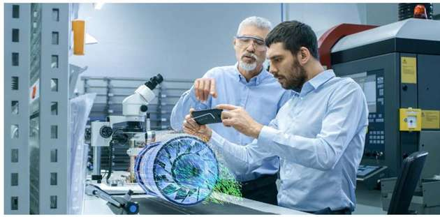
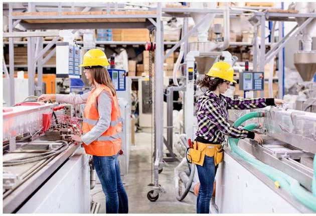

Virtual Reality
Virtual reality (VR) is a simulated experience that can be similar to or completely different from the real world. Applications of virtual reality include entertainment like video games, education mainly in medical or military training and also business where it can be used for virtual meetings. Other distinct types of VR-style technology include augmented reality and mixed reality, sometimes referred to as extended reality or XR.
Augmented Reality
Augmented reality (AR) refers to an interactive experience of a real-world environment where the objects that reside in the real world are enhanced by computer-generated perceptual information, sometimes across multiple sensory modalities, including visual, auditory, haptic, somatosensory and olfactory. AR can be defined as a system that fulfills three basic features: a combination of real and virtual worlds, real-time interaction, and accurate 3D registration of virtual and real objects.
AR and VR in Industry
Virtual Reality (VR) and Augmented Reality (AR) will open up a world of new possibilities in various situation from designing components, testing product quality, communication and training.Virtual Reality can help users save time and money while also providing a comfortable, immersive, and realistic experience that is not possible in the real world. From white label solutions to custom hardware and software creation for unique industry use cases, VR and VR technology can be tailored to meet the needs of a wide range of vertical markets. Learn more about particular use cases in article below.
Design and Visualisation
Both VR and AR are capable of accurately rendering shapes and models which will provide designers the means to test their design without actually physically making them first. Effectively cutting the cost for buying materials for making prototypes.
Designers using AR in designing products.
In aerospace and automotive industries, testing ergonomics and safety features are made more efficient with visual environments.
For example use of Cave Automatic Virtual Environment (CAVE) enables design teams to test and adapt designs with great accuracy. In addition to this, collaboration are also made possibe with CAVE's ability to create digital twin allows.

Cave Automatic Virtual Environment (CAVE) in action.
AR on the assembly line
Any product manufacturing involves putting together multiple components (often hundreds or thousands) in a precise sequence as quickly as possible. This is true whether one is manufacturing televisions or car engines, and every new product requires a new set of assembly instructions.
Workers using AR to receive real time instructions during product assembly process.
Emerging AR applications give new life to delivering real-time instructions to workers on the front line and can provide the opportunity for guidance on all tasks and overlay images to make assembly more accurate. Using HMDs or glasses, instructions and support can always be in a worker’s field of view; enabling hands-free operation and minimising the need to check in at workstations, all of which increases productivity.
Workforce recruitment, training & knowledge retention
Because of the immersive and realistic nature of VR, it’s very well placed to enable companies to create real life scenarios and situations that would either be impossible – or very costly – to replicate in real life. In an industrial setting, GE is taking advantage of this. Speaking with the Wall Street Journal last year, Julie Grzeda, Director of Global Leadership Programs and University Relations, General Electric, revealed that GE has started using VR to improve its employer brand and showcase its tech-forward positioning with millennials and other audiences. Potential candidates at college and recruiting events can use a VR headset to experience one of the company’s new trains rushing across the plains or the technology behind its undersea oil and gas operations.
Once in place, AR and VR can speed the onboarding of new workers and improve worker productivity, by offering more immersive, on-the-job training. Also, glasses that project video, graphics and text can visually guide a worker through assembly or maintenance tasks.
Together with providing companies an opportunity to showcase work to potential employees and on-board workers better, AR and VR also give them the opportunity to retain the knowledge of an aging workforce. No longer does an expert technician need to be in place to train and oversee every technician or machinist, companies can now use AR technology to supplement their employees’ existing knowledge – potentially even with engineering expertise delivered via telepresence. Put simply, with the right application of AR on the production floor, training becomes truly ‘on the job’. You can feed training information right on top of the actual parts and assemblies. So, you can start mixing the actual delivery of tasks directly with training, which ultimately makes the equipment easier to learn and use.
AR & VR in manufacturing
It’s clear that both Augmented and Virtual Reality technologies are vastly increasing productivity and efficiencies for manufacturing companies. The practical applications are there, and the benefits can be enormous. From reducing training costs and increasing knowledge retention, to getting products to market quicker or making assembly lines and maintenance tasks vastly more efficient; there are huge opportunities available for manufacturers to take advantage and they’re only going to get even more pronounced as the technologies mature.